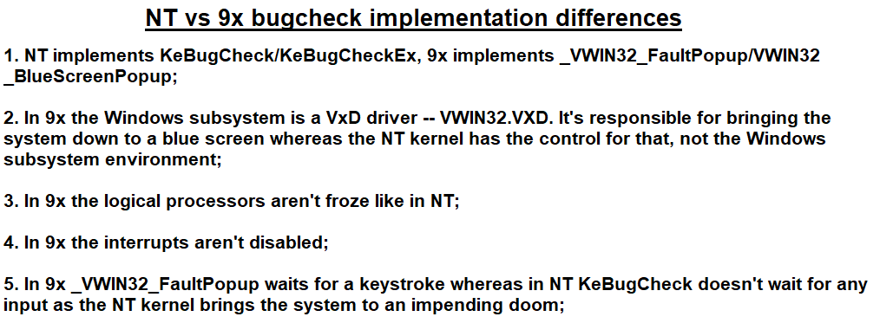

ReactOS Tutorials
Understanding Blue Screens of Death (Part 1)
Table of Contents
-
Introduction
-
Why does ReactOS/Windows have to crash?
-
The anatomy of a BSoD
-
The internal mechanism of a BSoD
-
Is the crash caused by a hardware malfunction?
-
Differences between Windows 9x and NT blue screen internal mechanism
-
References
Introduction
Ahh, those blue screens. Everybody hates them and so do you. Especially when you're in the middle of something, like doing important work and out of a sudden a BSoD pops up
leaving all of your unsaved work lost forever. It's so frustrating, isn't it? Despite this, Windows (and ReactOS as well) have multitude of reasons why the system has to be
brought to a crash and in this article I'll cover the general tenets and aspects of the blue screen. In the Part II of the article I'll be covering how to actually
troubleshoot a BSoD using WinDBG and understanding crash dumps.
Why does ReactOS/Windows have to crash?
Before diving into the realm of blue screens, we must first understand the basic concept of what exactly a blue screen is. The Blue Screen of Death (or BSoD by its acronym) is typically
the ominous error screen displayed by Windows indicating a serious condition in which Windows couldn't proceed further. Such condition can be, for example, an illegal execution or phenomenas
that, if left un-guarded, could potentially corrupt the system further to the point of no recovery. In the NT programming realm we name BSoDs as bugchecks (and I'll name BSoDs with that term for the rest of the article).
What do I mean by that, exactly? For instance when the NT kernel, an important component of the Windows subsystem (e.g. Win32k) in the kernel space or kernel mode drivers were given a bogus pointer
which points to a certain area of memory that couldn't be accessed for a plethora of reasons, like, if the said pointer has an address that is not currently mapped into the memory or it
doesn't even exist in the first place the system has to immediately bring its own state to a sudden crash before making the situation way worse, like, writing corrupt data to the I/O storage.
Another instance of a fatal system crash is when some conditions have not been met in order for Windows to continue its normal operation. Let's take MULTIPROCESSOR_CONFIGURATION_NOT_SUPPORTED bugcheck code for example.
This bugcheck occurs when Windows has caught that the hardware's multiple logical processors although none of them are symmetrical, that is, each of those have different types and level. It has no correlation with memory or I/O paging corruption whatsoever
as the physical/virtual memory areas weren't even touched at all. The NT kernel is baffled because of such differences and doesn't know how to tackle the aforementioned situation, going through a system crash
is the only option.
All in all, when it concerns the scenario of bugchecks, we all must ponder this thought that the situation is not black & white. A bugcheck can occur for various of reasons under a plethora of instances
depending on the conditions which Windows went through for the bugcheck to happen. Here's a screenshot with a few summarised points of why a bugcheck happens.

The anatomy of a BSoD
The basic structure of a bugcheck screen is as follows, taking the previous variant of the blue screen (used from Windows 2000 to 7, the latter like 8 and 10 have a different layout).

In this blue screen, I have numbered the sections as each of those have a specific meaning. Let's get started:
1. Intro -- The generic introduction description. Nothing special here.
2. Bugcheck description -- This is the actual description that differs for each bugcheck code that was used to indicate the crash. On some bugchecks the bugcheck code is directly
pointed whilst others may rather display a short summary description that's related to the specific bugcheck.
3. Steps -- As usual, generic description. It mostly tells you what to do in case of a bugcheck being invoked. This portion of the text can change depending on the bugcheck code that was invoked.
4. Technical data -- This is by far the most important piece in a blue screen. When a bugcheck occurs a STOP code is given alongside with 4 parameters. The STOP code indicates the type of bugcheck
with the 4 parameters indicating specific and particular information that is tied to the bugcheck. The last 4 parameters are unique on their own as every bugcheck issues those parameters accordingly, some
even do not issue any kind of information (the value is 0). In the latter case, if all the said 4 parameters are 0 (0x00000000) then the given bugcheck doesn't log out any extra information.
5. Additional data -- Provides the faulty process, the address and datestamp of the process in question.
The bugcheck texts are stored in a table as a special file with the .mc extension -- such file can be found here.
Internally the text strings are acquired by calling the kernel routine KeGetBugMessageText which bases upon the RtlFindMessage routine implementation to retrieve the bugcheck message text from the table within the memory space.
The internal mechanism of a BSoD
Whenever a bugcheck happens, the function calls that are responsible for bringing the system to a fatal crash are KeBugCheckEx and KeBugCheck exported for use by the kernel.
DECLSPEC_NORETURN
VOID
NTAPI
KeBugCheckEx(IN ULONG BugCheckCode,
IN ULONG_PTR BugCheckParameter1,
IN ULONG_PTR BugCheckParameter2,
IN ULONG_PTR BugCheckParameter3,
IN ULONG_PTR BugCheckParameter4)
DECLSPEC_NORETURN
VOID
NTAPI
KeBugCheck(IN ULONG BugCheckCode)
BugCheckCode parameter is the STOP bugcheck code that is being filled by the caller indicating the reason of the system crash. The last 4 parameters, whereas, provide extra information in regard to the bugcheck.
The only difference between these two functions is that KeBugCheck internally calls the extended variant of the function but issuing the last 4 parameters with 0 in Windows. Speaking of which, in Windows the extended
version of the function depends on an internal private helper function which is KeBugCheck2. In ReactOS, however, both these functions depend on a helper function named KeBugCheckWithTf (the abbreviation of Tf meaning Trap frame).
In this section of the article I'll be covering the mechanism in action of a bugcheck, detail by detail. The ReactOS bugcheck code implementation will be taken into account here, with the said implementation
being written here (filename bug.c). Let's get started:
1. Power failure simulation detection -- Initially the helper function checks if a power failure simulation has been performed for whatever reason by looking at the bugcheck code.
If that's the case then the helper will execute the bugcheck callbacks and calls the HAL to invoke a reboot.
2. Hardware trigger & CPU context -- The function proceeds further by obtaining the current interrupt request level (IRQL) which it'll be cached to the DebuggerSavedIRQL member
of the processor region control block (PKPRCB). This is necessary for later debugger usage. Afterwards, the helper captures the current context of the processor in the exact moment the caller invokes the bugcheck function.
Refer to this in regard of which contents are in a CONTEXT data structure.
3. Capture bugcheck code & perform additional tasks -- Most of the time KeBugCheckWithTf will spend on determining the bugcheck code and perform specific tasks for the bugcheck that was being caught.
In this phase the helper also determines who's the responsible component at fault for calling the bugcheck function and it's KiPcToFileHeader where comes into action.
KiPcToFileHeader (Pc stands for Program counter) is an internal kernel routine not exported for use outside the kernel layer module (Ke). The function is responsible for determining
in which area the bugcheck call occurred. It does that by looping through the list head and obtaining a loader entry and base address. After that the said list entry is examined if it's a kernel one
(NT kernel or HAL) or if the entry comes from a driver. The first two entries in the list are reserved for the system, kernel and HAL. The list head is initialised by either looking for the list
from the kernel loader block (KeLoaderBlock) or from the process modules list (PsLoadedModuleList).
4. Dump parameter images & driver name -- If a device driver is deemed to be at fault for crashing the system the KeBugCheckUnicodeToAnsi function will be called to convert
the driver name string into ANSI as the bugcheck implementation doesn't take Unicode. Otherwise KiDumpParameterImages will get invoked to dump the image file name and datestamp.
5. Check if a debugger is connected -- In this phase the helper checks if a debugger is connected to the system and if that's so, the helper dumps all the bugcheck parameters with DbgPrint
and breaks into debugger using KiBugCheckDebugBreak.
6. Disable interrupts & stall the CPU -- At this point all the interrupts are disabled with the _disable intrinsic routine and the IRQL raised to HIGH_LEVEL.
HIGH_LEVEL is the highest IRQL in the ranking interrupt priority level, any related bugcheck routine can't be interrupted from execution. After that, all the iterated logical
processors in a loop are stalled (froze) by sending an IPI (Inter-Processor Packet Interface) to all logical processors enumerated in a loop iteration. The function that sends such IPI
is KiIpiSend. Alongside with that, KeStallExecutionProcessor is also used so that each logical processor receives the IPI accordingly in a timely fashion.
7. Display the blue screen -- The function that accomplishes this task is KiDisplayBlueScreen. Here's an interesting fact in this one, the kernel uses the BOOTVID
module (also called Boot Video) to display the actual blue screen. Basically KiDisplayBlueScreen acquires screen ownership and resets the display in VGA mode by using the
functions InbvAcquireDisplayOwnership and InbvResetDisplay. The function that sets the background in blue navy colour is InbvSolidColorFill with the
colour flag value, BV_COLOR_BLUE and the text colour to white using the InbvSetTextColor function and BV_COLOR_WHITE as the colour flag value. The bugcheck
text messages are captured and printed to the blue screen with KeGetBugMessageText.
8. Write triage & crash dumps -- We're almost done. At this stage the bugcheck implementation begins writing both the triage and crash dumps to disk. However, as of now ReactOS
doesn't currently implement such mechanism for writing dumps yet. This part will be covered in detail once code for it is implemented. In Windows however, this mechanism is being handled
by IoIsTriageDumpEnabled, IoAddTriageDumpDataBlock and IoWriteCrashDump functions. All of these belong to the I/O kernel module service, since
the processor is operating on a HIGH_LEVEL interrupt level the functions operate on very restrictive measures (they can't allocate blocks of memory and the like).
9. Reboot -- If the reboot is wanted the helper function unloads the symbols with DbgUnLoadImageSymbols and calls the HAL to perform the reboot procedure.
Here's a screenshot of summarised points of how the bugcheck mechanism works.

Is the crash caused by a hardware malfunction?
Generally bugchecks tend to happen due to buggy 3rd party kernel mode drivers and accidental occurrences by the NT kernel or critical components which in the latter case they rarely happen. But
what if the crash is caused by a hardware malfunction? Definitely and without a doubt bugchecks can happen due to that as well however it's tricky on the first sight to judge
if the hardware is at fault.
The prime factors to take into account are: 1) Does the crash happen frequently? 2) What's the STOP code and the 4 parameters indicating? The frequency of the crash
and the information pointed by the STOP code and the additional 4 parameters can give you a small hint of what roughly happened and besides that, the image filename is also important in this
context. As I have previously stated above, if the last parameters are 0 then the specific STOP bugcheck code doesn't issue any additional information. Another factor to take into account is
how the hardware behaves. Excessive I/O errors such as failures on copying data from the primary storage like from HDD to another storage because of bad sectors is a clear indication Windows
will bugcheck sooner or later.
Another example of a hardware malfunctioning is when Windows strangely fails to launch executable processes (or doing any kind of task regarding the matter). This could be due to faulty
RAM chips which memory cells are damaged and that can severely impact the well performing of paging data between two storages, allocating data to the physical memory and whatnot. As usual,
it's not of a big surprise Windows will crash sooner or later in this case too. In other words, the high chance of probability the hardware is at fault is when the crash occurs too frequently and/or
the hardware behaves abnormally.
Differences between Windows 9x and NT blue screen internal mechanism
As you now understand how a bugcheck happens in a NT-based Windows architecture operating system, you may wonder one thing. What's the actual difference between Windows 9x and NT
in terms of bugcheck implementation? How come in versions of Windows like 95 you can press a key to continue the normal OS operation (although it won't do much) whilst in NT a
bugcheck is like an absolute death sentence? All of that lies down to the architecture differences.
In Windows 9x editions the Windows subsystem is encapsulated in a VxD driver (a.k.a Virtual Driver) which name is VWIN32.VXD. The function that is responsible for displaying
the bugcheck in 9x is _VWIN32_FaultPopup and that is implemented in the same VxD driver. Another variant of the routine that deals with the bugcheck implementation is
VWIN32_BlueScreenPopup (presumably the difference between those is that the former is an intrinsic whereas the other is not). The function is called each time an exception
within the subsystem occurs.
In addition, the software interrupts are not disabled nor masked as in the case of what KeBugCheck(Ex) does in the NT kernel. As a matter of fact is that _VWIN32_FaultPopup
waits for a keystroke by the user (hence the typical Press any key to continue message in the blue screen). VWIN32.VXD is still loaded in the memory and the user is able to bring Windows back
to the graphics shell even though the chance of successfully getting back into the shell and continuing the normal operation is pretty much minimal as the system may become unresponsive.
With all that being said, this explains why the blue screen in the 9x editions of Windows are less serious than in NT however. In 9x the user may willy nilly be able to continue using the system with
some issues, it's a hit and miss condition. But a bugcheck in NT indicates a fatal problem which the system cannot be recovered, what is left for the user to do is to restart the system.
Here's a screenshot of a few summarised points in regard of NT/9x bugcheck implementation differences.

{kind=link}